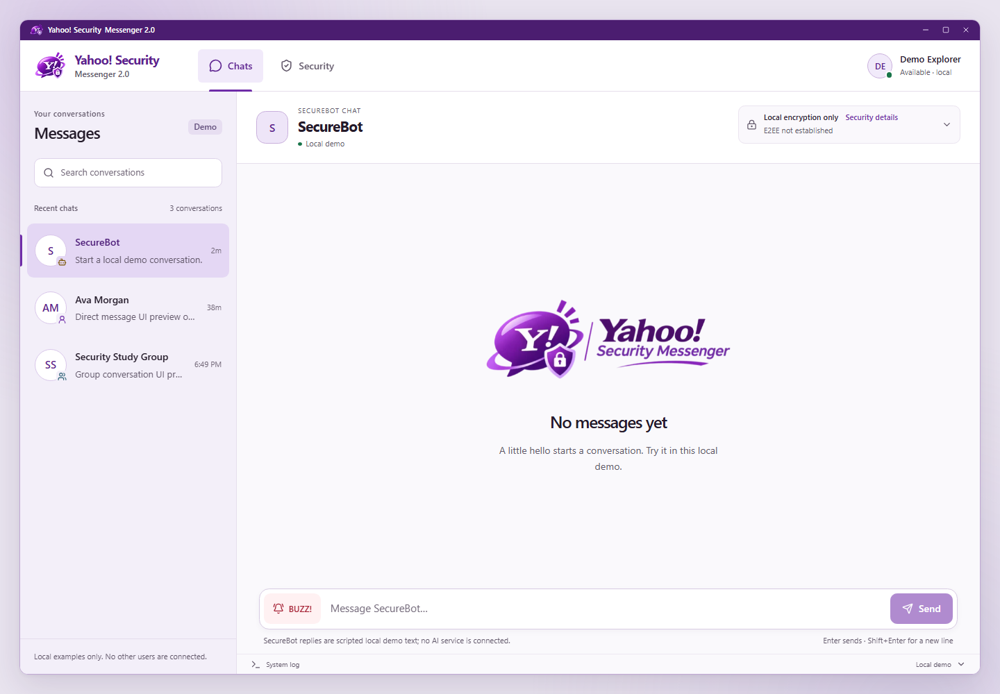
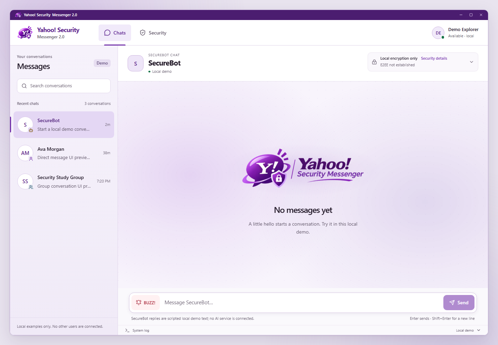
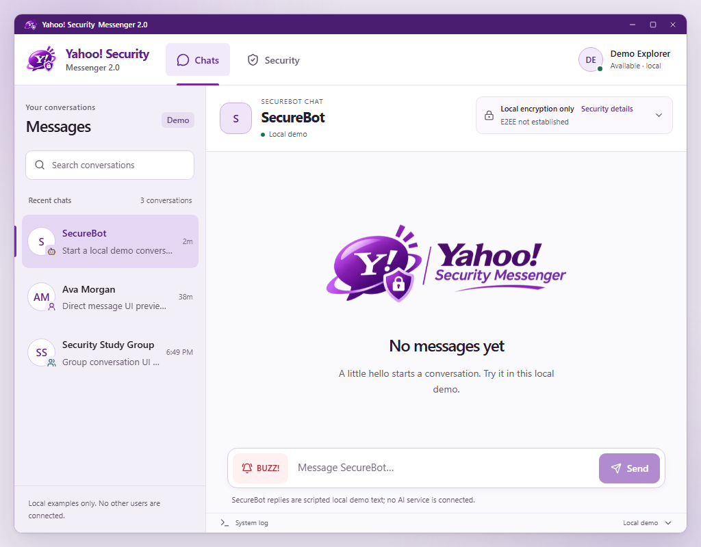
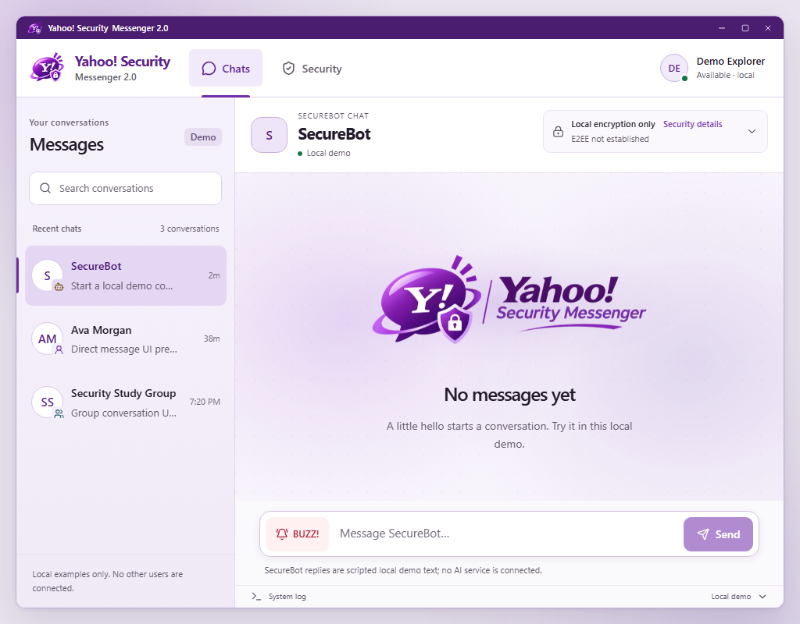
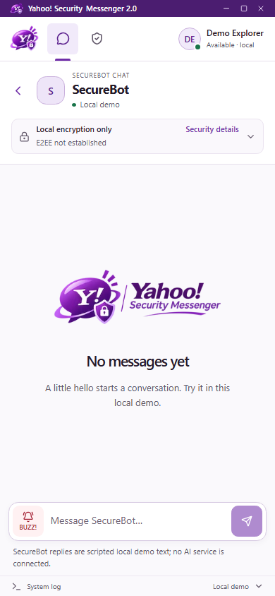
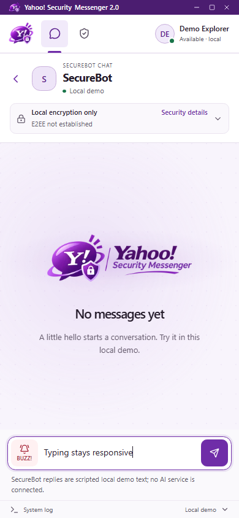
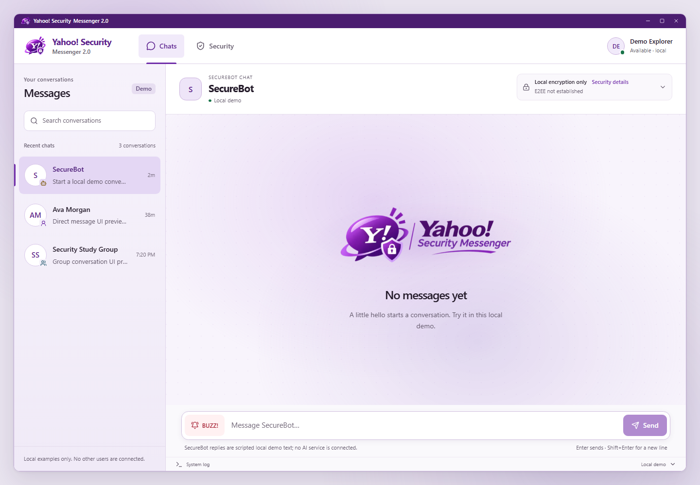

Yahoo! Security Messenger - MASTER motion
Before and after the master motion pass. The empty canvas adds moving lavender light, texture and a logo glow, while the message-reading surface remains stable. Open the actual capture player for measured motion.
Open the actual Chrome motion capture player
Before
After
Before
After
Before
After
Natural ambient movement · actual capture
Two frames from the same32-second natural playback, with no animation seeking. The full sequence is available in the motion player.
Capture startAbout16 seconds later